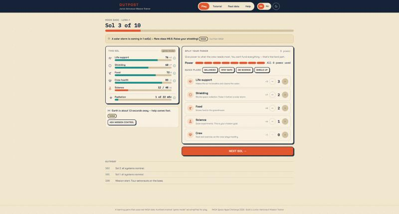
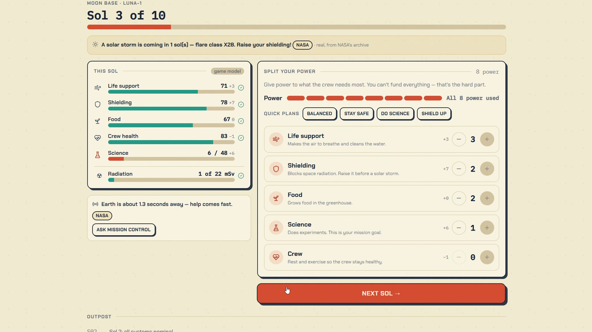
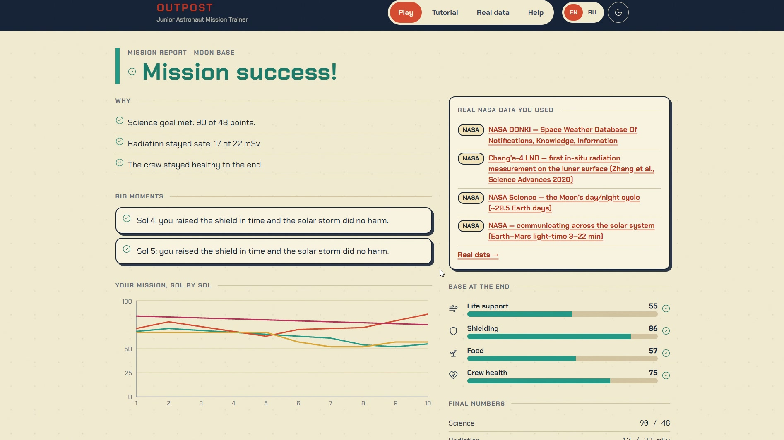

Children 7–12 run a Moon or Mars base — using real NASA data.
outpost-junior-astronaut.vercel.app
Challenge: Build a Junior Astronaut Mission Trainer1 / 7
The challenge01
Kids 7–12, running a real outpost
The brief: let children manage a lunar or Martian outpost and make real decisions — where every choice teaches something true.
Life supportRadiation shieldingPower budgetFoodComms delay
The gap we close
Most kids' space games invent their numbers. OUTPOST uses real NASA data — and stays honest about what's real and what's simplified for play.
OUTPOST · Junior Astronaut Mission Trainer2 / 7
How it works02
One power budget. Five needs.
Each sol (space day) you get limited power. Split it across five systems — you can't fund everything, so every choice costs.
Life support
Shielding
Food
Science
Crew rest
Radiation ↑
Moon = 10 sols · Mars = 12 sols · finishable in minutes.

Spend power on shielding → science falls behind. No safe option.3 / 7
Real NASA data03
The hazards are real
NASA DONKI (live): real solar flares from NASA's space-weather feed become your storms — with an archive of real historic flares (X28, X9.3, X8.7) as fallback.
Radiation: Chang'e-4 LND (Moon ≈1.3 mSv/day), NASA RAD / Curiosity (Mars ≈0.64).
Environment: sol = 24 h 39 m · lunar night ≈29.5 days · Earth–Mars comms 3–22 min.
In-app, every flare is tagged live vs archive, and every fact REAL NASA DATA vs game model.

Not invented numbers — sourced, dated, and labelled.4 / 7
Why it matters04
Learning you can feel
Teaches systems thinking & trade-offs, not facts to memorize — the lesson sticks because the child feels each cost.
Free, no account, works offline (installable PWA) — runs on a cheap school laptop or phone.
Bilingual (English + Russian); plain language + built-in tutorial for ages 7–12.
Honest: a page explains what's simplified → builds literacy, not misconceptions.

The mission report cites the exact NASA datasets the player relied on.5 / 7
Pure game-model with 18 automated tests; live NASA data with a safe offline fallback.
Deployed on Vercel, open-source on GitHub, fast and installable.
Use of AI (disclosed): an AI assistant helped write code and assemble the demo; all design, data choices, balancing and testing were directed and verified by the team. No fabricated numbers are presented as NASA data.